A precise, step-by-step working guide for charity facilitators
Who this is for. Charity Facilitators — the elevated charity-side role responsible for
reviewing referrals, approving or rejecting them, and managing the bookings that turn an approved referral
into an actual stay for a family. This is not an onboarding guide; it assumes your account already has the
Charity Facilitator role and you've logged in. For account setup, see Onboarding a Charity Facilitator.
What this document covers. Every task you perform day-to-day, broken into precise steps with
the exact URLs, button names, required fields, validations, and what happens behind the scenes — including
which emails are sent and which records change. Because real families depend on these workflows being executed
correctly, every step in this document has been verified against the application's source code.
Tasks covered
Open and read your dashboard — understand the numbers before you act.
Browse referrals — see all referrals for your charity, optionally filtered by status.
Review a referral's details — understand who's being referred and why before approving.
Approve a referral — greenlight a family for housing.
Reject a referral — with a written reason, sent to the charity partner.
Browse bookings — the master list of all stays for your charity.
Create a booking from an approved referral — turn approval into a real stay, optionally funded by a donation.
Check in a guest — mark arrival when the family shows up.
Check out a guest — mark departure at the end of the stay.
Cancel a booking — with a written reason. Releases donation funds and partner availability.
Update a booking's status manually — for the cases the standard buttons don't cover.
Reference: statuses you'll see
Referral statuses
Pending awaiting review ·
Approved ready for booking ·
Rejected declined ·
Completed family stayed ·
Cancelled withdrawn before stay
Booking statuses
Pending created, not yet confirmed ·
Confirmed ready for arrival ·
Checked In family on site ·
Checked Out family has left ·
Completed stay closed ·
Cancelled ·
No Show
Task 1 — Open and read your dashboard
TASK 1Read the Facilitator Dashboard
When
Every time you log in — orient yourself before doing anything else.
Where
/charity-facilitator/dashboard
The Facilitator Dashboard is the green-themed page you land on after login. It shows the operating health of your charity at a glance: how many referrals are awaiting your review, how many are approved, how many bookings are active, and recent activity.
If you also have the Charity Partner role, you'll land on the purple Charity Partner Dashboard. Click Facilitator Dashboard in the sidebar (the green-highlighted item with the shield icon) to switch.
Read the eight stat cards at the top of the page (described below).
Scan the Recent Referrals and Recent Bookings sections for anything new since your last login.
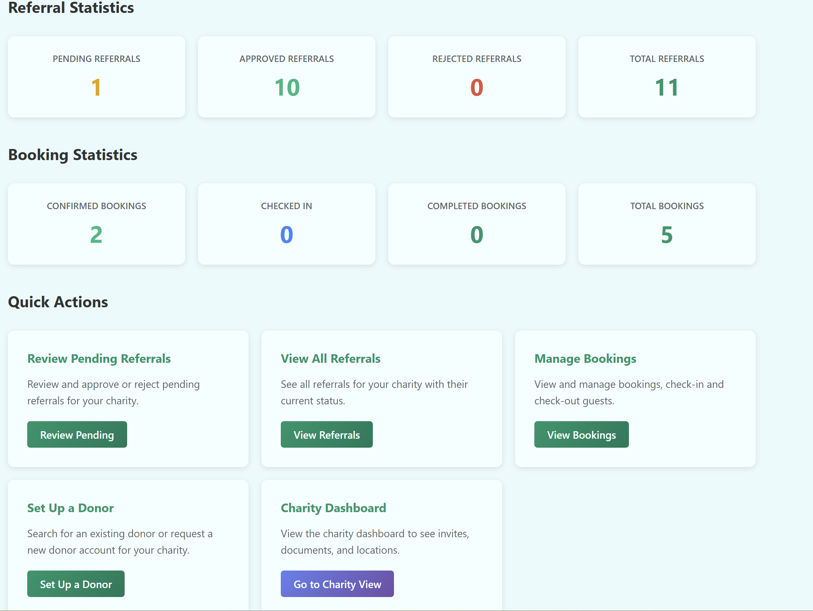
The Charity Facilitator Dashboard.
What the stats mean
Card
Meaning
Pending Referrals
Referrals awaiting your approve/reject decision. Anything here is blocking a family from being booked.
Approved Referrals
Referrals you've approved that have not yet had a booking created.
Rejected Referrals
Referrals you (or another facilitator) declined. Counts cumulatively.
Total Referrals
All-time count for your charity.
Confirmed Bookings
Bookings ready for arrival but the guest hasn't checked in yet.
Checked-In Bookings
Families currently on site. This number drives daily operations.
Completed Bookings
Stays that have ended.
Total Bookings
All-time count.
Tip: If Pending Referrals is greater than zero on a given morning, that's the first place to start — every pending referral is a family waiting for an answer.
Task 2 — Browse referrals
TASK 2Browse the referrals list
When
Reviewing what's pending; finding a specific referral.
Where
/charity-facilitator/referrals
The Referrals page lists every referral submitted under your charity, newest first. You can filter by status to focus on what needs attention.
Steps
From the top navigation, click Referrals.
To filter by status, use the status filter buttons or pass a query parameter (e.g. ?status=PENDING). The valid values are PENDING, APPROVED, REJECTED, COMPLETED, CANCELLED.
Each row shows the participant's name, urgency level, location preference, status, and the date the referral was created. Click any row to open the referral's detail page.
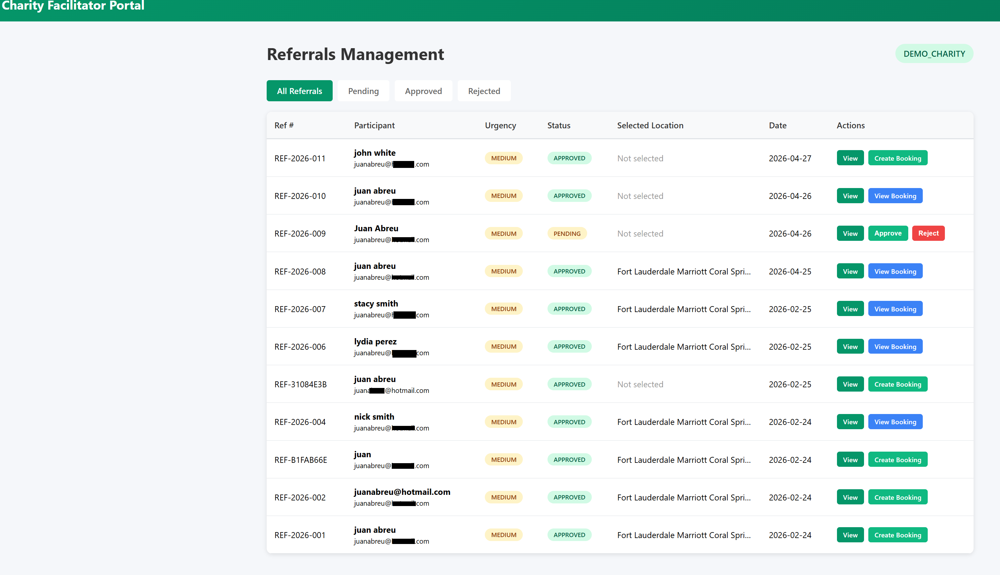
The referrals list with a status filter applied.
Note: Referrals from other charities never appear here. The list is automatically scoped to your charity only.
Task 3 — Review a referral's details
TASK 3Review a referral before deciding
When
Before approving or rejecting any pending referral.
Where
/charity-facilitator/referrals/{id}
The Referral Details page is where you read everything the charity partner has captured about the family being referred. Always read this carefully before approving — once approved, a booking can be created and a real stay reserved.
What you'll see
Participant info — name, phone, email, household size.
Urgency level — Low, Medium, High, or Critical.
Needs description — the situation in plain language, captured by the charity partner or by the participant via the public invite link.
Selected location — either a charity location (one of yours) or a partner property (e.g. a hotel that has linked to your charity).
Referred by — which charity partner submitted this.
Existing booking, if any — if a booking has already been created from this referral, the page links to it.
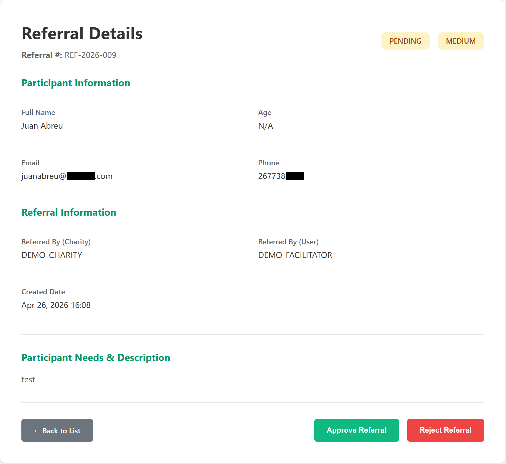
A pending referral, ready for approve/reject decision.
Privacy reminder: Participant information is sensitive. Don't share screenshots of these pages outside SafelyNested without redacting the names, contact details, and needs description.
Task 4 — Approve a referral
TASK 4Approve a pending referral
When
The referral is in scope, accurate, and you're ready to fund a stay.
Where
Approve button on the referral detail page → modal → POST /referrals/{id}/approve
Steps
Open the referral detail page (Task 3).
Confirm the status is Pending. The Approve button only appears in this status.
Click the green Approve Referral button at the bottom of the page.
A modal appears with an optional Notes textarea. Use it to record any context for later reference (it's saved on the referral as facilitator notes). Notes are optional.
You're returned to the referrals list with a green success banner.
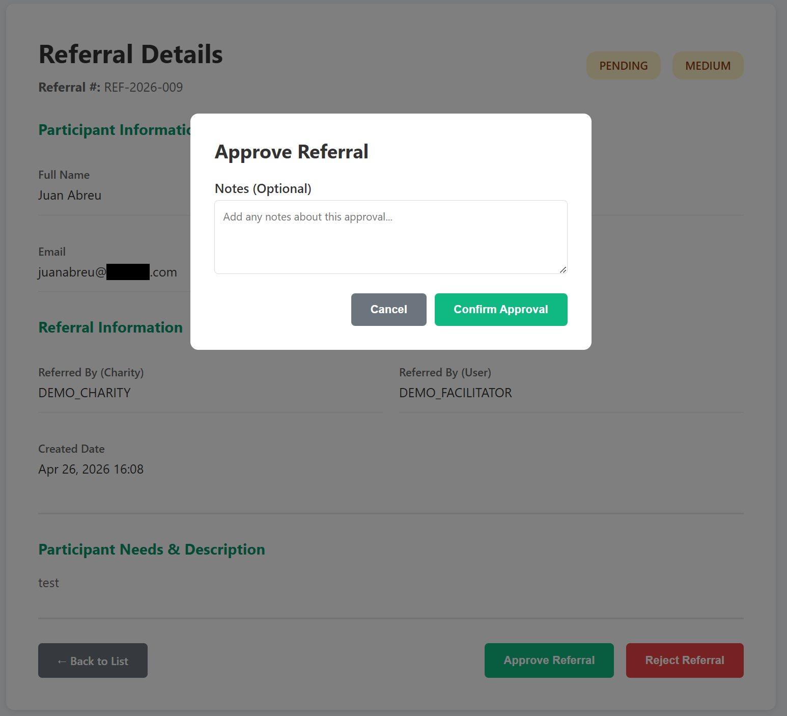
The approval modal. Notes are optional but useful for handoff.
What happens behind the scenes
Change
Detail
Referral status
Pending → Approved
Approved by
Set to your user account.
Approved at
Set to the current timestamp.
Facilitator notes
Saved to the referral if you provided any.
Email notifications
Sent asynchronously to the charity partner who created the referral and to the participant if they have an email on file.
Important: Approving a referral does not create a booking. The family doesn't have a confirmed stay until you (or another facilitator) creates a booking from this approved referral — that's Task 7.
Task 5 — Reject a referral
TASK 5Reject a pending referral with a reason
When
The referral is out of scope, duplicate, or otherwise not appropriate to fund.
Where
Reject button on the referral detail page → modal → POST /referrals/{id}/reject
Steps
Open the referral detail page (Task 3).
Confirm the status is Pending. The Reject button only appears in this status.
Click the red Reject Referral button.
A modal appears with a required Reason for Rejection textarea. Write a clear, respectful explanation. The charity partner will see this verbatim.
Click Confirm Rejection.
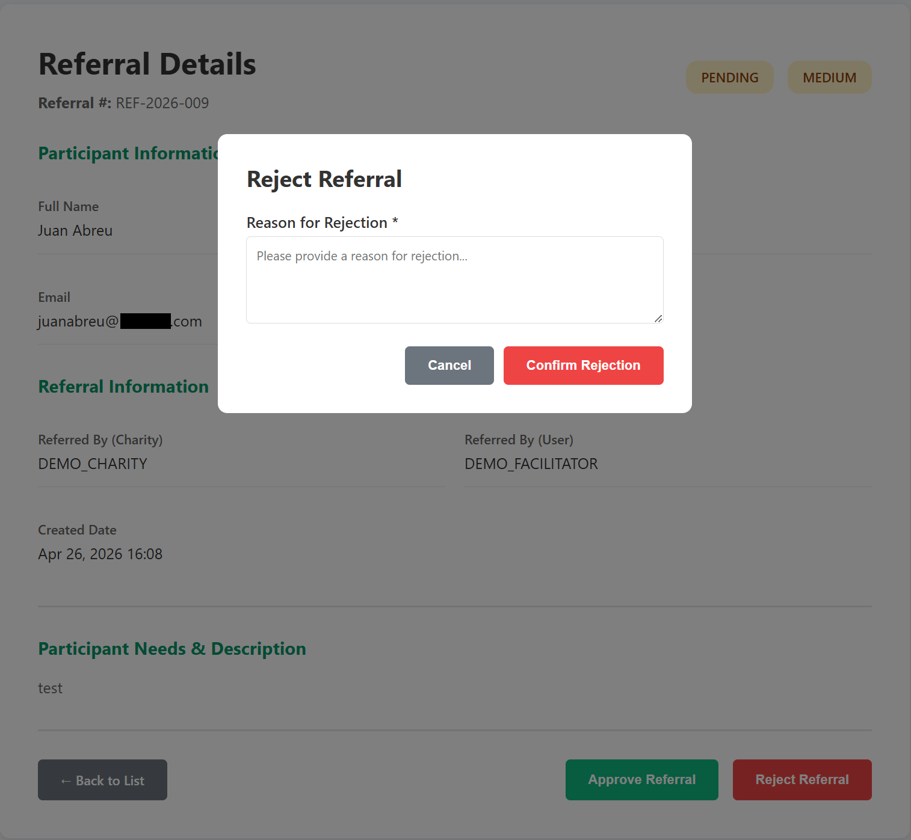
The rejection modal. The reason is required and shown to the charity partner.
What happens behind the scenes
Change
Detail
Referral status
Pending → Rejected
Reviewed by / at
Set to your user / current timestamp.
Rejection reason
Saved on the referral, visible to the charity partner.
Email notifications
A rejection notification email is sent asynchronously to the charity partner who created the referral.
Reject reasons are seen by humans. The charity partner reads the reason and may share it with the participant. Be specific, factual, and kind. Avoid blame language. Examples: "Out of catchment area — we serve only Tulsa County"; "Duplicate of referral REF-2026-0123 — please use that one"; "Pending verification of the situation — please resubmit with caseworker contact info."
Task 6 — Browse bookings
TASK 6Browse the bookings list
When
Tracking what's checked in, what's coming up, what's complete.
Where
/charity-facilitator/bookings
This is the master list of every booking ever created for your charity, regardless of who created it. Optional ?status= filter accepts: PENDING, CONFIRMED, CHECKED_IN, CHECKED_OUT, CANCELLED, NO_SHOW, COMPLETED.
Steps
Click Bookings in the top navigation.
Each row shows confirmation code, participant name, location, check-in date, check-out date, status, and an action menu.
Click a row to open the booking detail page (Task 7+).
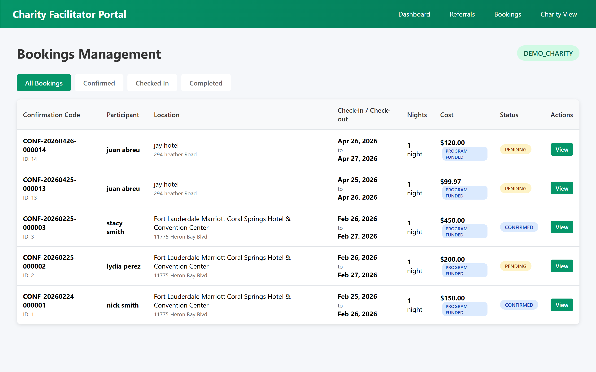
The bookings list with multiple statuses visible.
Tip: Filter to Confirmed to see all upcoming arrivals you'll need to check in soon. Filter to Checked In to see who's currently on site.
Task 7 — Create a booking from an approved referral
TASK 7Create a booking from an approved referral
When
The referral is approved and you're ready to reserve a stay for the family.
Where
GET /charity-facilitator/bookings/new?referralId=X → POST /charity-facilitator/bookings/new
This is the heart of the facilitator's job: turning an approved referral into a real reservation. The booking form is long but most of it is pre-filled or optional. Required fields are marked with *.
Steps
From an approved referral's detail page, click Create Booking. (You can only create a booking for an Approved referral — the system will block other statuses.)
The form opens. The participant's name, email, and phone are pulled automatically from the referral.
If the participant chose a location via their public invite link, the form will already display a yellow callout reading "Participant's preferred location: {location}" and the location dropdown will be pre-set. Do not silently change this — if you must, document why in the Notes field.
Fill in the required fields: Location*, Check-in Date*, Check-out Date*.
Optionally fill in time-of-day fields, special instructions, and any notes the location admin will need.
If a donation is funding this stay, see the Funding from a donation section below.
Click Create Booking. The page redirects to the bookings list with a success banner showing the new confirmation code.
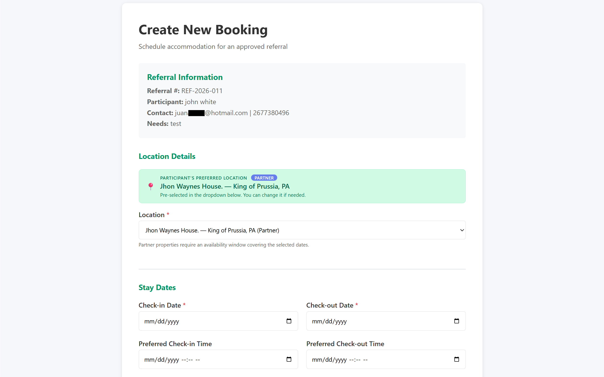
The top of the booking form. Required fields are marked with red asterisks.
The location dropdown
Two groups appear:
Our Locations — charity locations belonging to your charity that are marked active.
Partner Properties — properties owned by Location Partners that are linked to your charity. These show alongside city and state for clarity.
You can pick from either group. The form's hidden locationSelection field encodes the choice as charity:{id} or partner:{id}; you don't need to think about that.
Funding from a donation (optional but recommended)
If a verified donation has nights or dollars remaining, you can fund this booking from it. The dropdown lists eligible donations with the donor name, original net amount, and remaining balance.
In the Fund from a Donation card, choose a donation from the dropdown.
The form auto-fills payment status to Program Funded, payment method to PROGRAM_FUNDED, and "Paid by" to the donor's display name.
Make sure the booking Cost field is set — it will be debited from the donation's remaining balance. If cost exceeds the remaining balance, the form will reject the submission with an error.
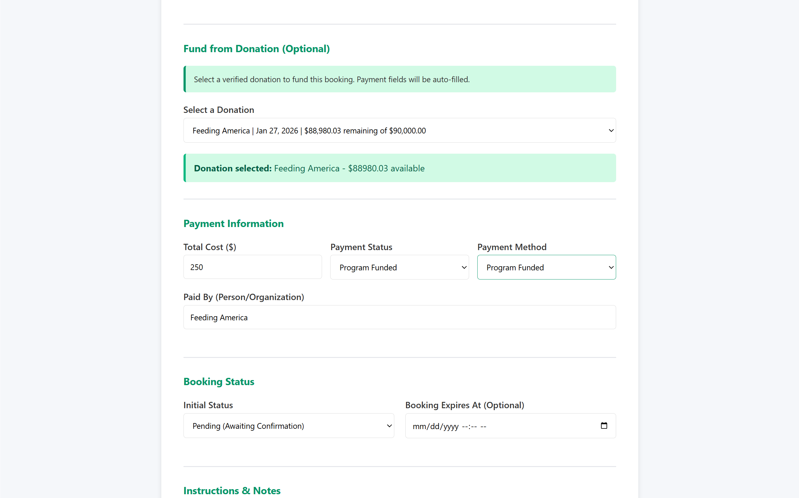
Selecting a donation auto-fills the payment fields.
What happens behind the scenes on submit
Change
Detail
Booking record
Created in Pending status (or whatever you selected).
Confirmation code
Generated automatically. Format: looks like SN-XXXXXXXX.
Participant snapshot
Name, email, phone copied from the referral onto the booking (so historical records survive even if the referral is later edited).
Partner property availability
For partner-property bookings: the matching availability window is consumed (split into BOOKED and surrounding AVAILABLE pieces).
Donation status
If donation-funded: donation moves Verified → Allocated.
Booking confirmation email
Sent automatically to the participant if they have an email on file. Failure to send won't break the booking.
Validation errors you might hit:
"Can only create bookings for approved referrals" — the referral isn't approved.
"Check-out date must be after check-in date" — dates inverted.
"Booking must be for at least 1 night" — same day check-in/check-out is not allowed.
"Your charity is not linked to that partner property" — you picked a partner location your charity isn't authorized for.
"That partner property is not active" — the partner deactivated it.
"Not enough donation funds available..." — the booking cost exceeds the donation's remaining balance.
Task 8 — Check in a guest
TASK 8Mark a guest as checked in
When
The family has arrived at the location.
Where
Booking detail page → Check In button
Steps
Open the booking from the bookings list.
Confirm the status is Confirmed or Pending. The Check In button only appears in those statuses.
Click the green Check In button.
A modal appears with an optional Check-in Notes textarea. Use it for things like "arrived 7:30pm with all 3 children, no luggage".
Click Confirm Check-in.
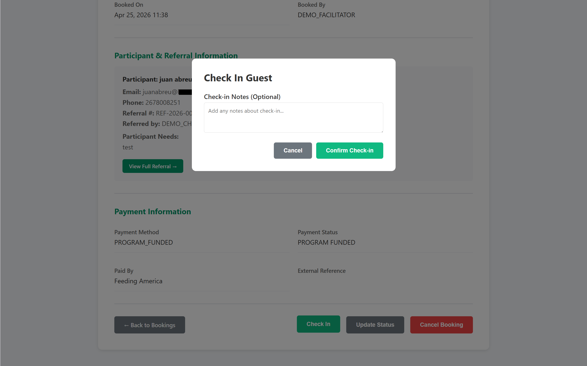
Check-in modal. Notes are optional but recommended for the handoff record.
What happens behind the scenes
Change
Detail
Booking status
→ Checked In
Actual check-in timestamp
Set to the moment you clicked Confirm.
Admin notes
Your notes are appended with a timestamp prefix.
Task 9 — Check out a guest
TASK 9Mark a guest as checked out
When
The family has left the location at the end of their stay.
Where
Booking detail page → Check Out button
Steps
Open the booking detail page.
Confirm the status is Checked In. The Check Out button only appears in this status.
Click the blue Check Out button.
A modal appears with an optional Check-out Notes textarea (e.g. "Property left clean, no damage").
Click Confirm Check-out.
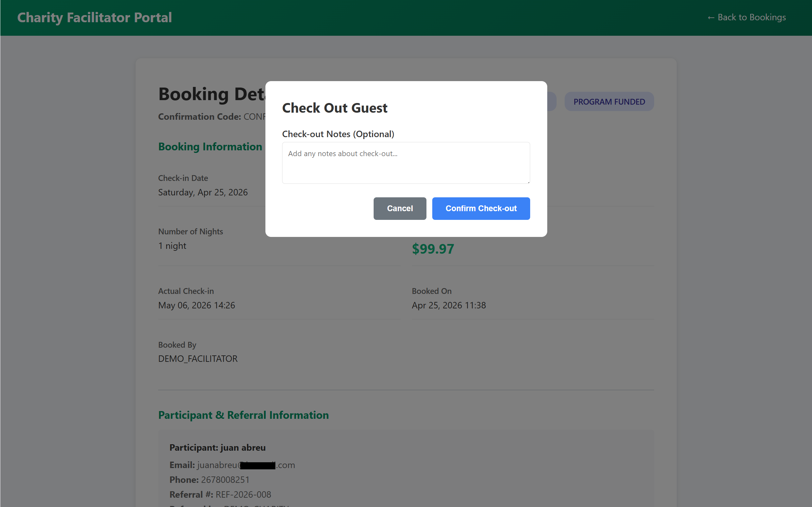
Check-out modal.
What happens behind the scenes
Change
Detail
Booking status
→ Checked Out
Actual check-out timestamp
Set to the moment you clicked Confirm.
Admin notes
Your notes are appended with a timestamp prefix.
Note: "Checked Out" is distinct from "Completed". Use Task 11 (Update Status) to mark a stay as fully completed once any post-stay paperwork is wrapped up, or leave it as Checked Out if completion isn't meaningful in your charity's process.
Task 10 — Cancel a booking
TASK 10Cancel a booking with a reason
When
The family won't stay (couldn't make it, found other housing, situation changed).
Where
Booking detail page → Cancel Booking button
Steps
Open the booking detail page.
Confirm the booking is not already Cancelled or Completed — the Cancel button is hidden in those states.
Click the red Cancel Booking button.
A modal appears with a required reason textarea. Enter a clear, factual reason.
Click Confirm Cancellation.
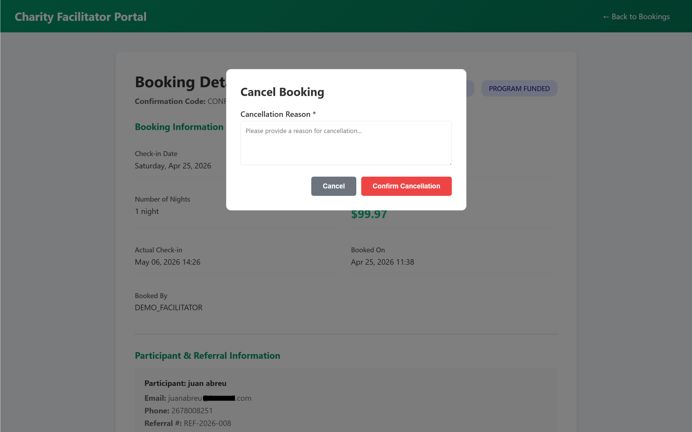
Cancel Booking modal. Reason is required.
What happens behind the scenes
Change
Detail
Booking status
→ Cancelled
Admin notes
Your reason is appended with a "CANCELLED -" prefix and timestamp.
Partner property availability
If the booking was at a partner property: the BOOKED window is restored to AVAILABLE, and other charities may now book those dates.
Donation funds
If donation-funded: the donation's status is recalculated and may revert from Allocated back to Verified if no other booking is consuming it. The funds are now available again for future bookings.
Cancellations are not silent. If you're cancelling on behalf of a partner property or because of a donor-funded change, please tell the affected parties. The system handles the data side automatically; the human side is on you.
Task 11 — Update a booking's status manually
TASK 11Update booking status (catch-all)
When
You need to set a status that the dedicated buttons don't cover — e.g. No Show, Completed, or correcting a wrong status.
Where
Booking detail page → Update Status button
Steps
Open the booking detail page.
Click Update Status.
Pick a status from the dropdown. Available values: PENDING, CONFIRMED, CHECKED_IN, CHECKED_OUT, CANCELLED, NO_SHOW, COMPLETED.
Optionally add Completion Notes.
Click Update Status.
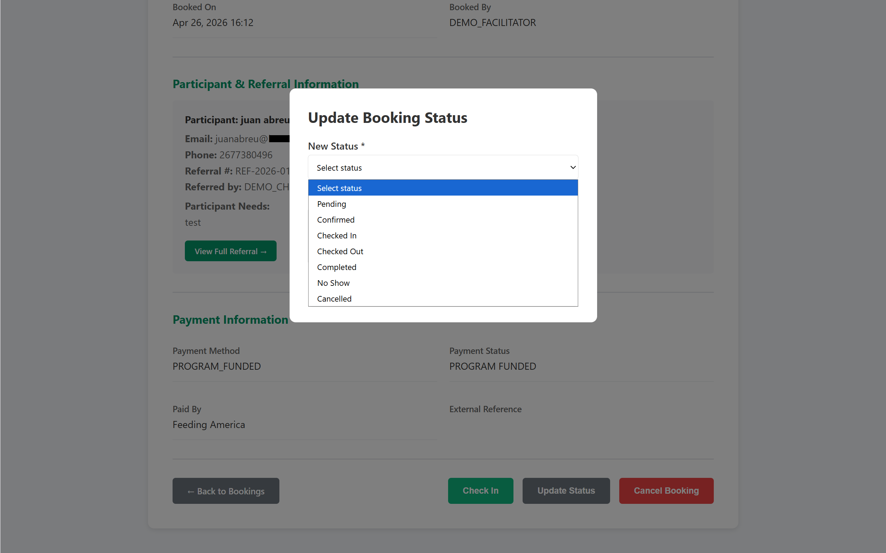
The catch-all Update Status modal.
Important: This action does not trigger side effects like releasing partner availability or recalculating donations. If you intend to cancel a booking, use Task 10 (Cancel Booking) — not this generic update — otherwise donation funds and partner availability will not be released. Use Update Status only for non-cancellation transitions.
Common errors and what they mean
Error message
What to do
"Referral not found or access denied."
The referral belongs to a different charity than yours, or its ID is wrong. Go back to the Referrals list.
"Only pending referrals can be approved/rejected"
Someone has already actioned this referral. Refresh the page to see the current status.
"Rejection reason is required"
You submitted the reject modal with an empty reason. Fill it in.
"Cancellation reason is required"
Same idea for cancelling a booking.
"Can only create bookings for approved referrals"
The referral hasn't been approved (or was already cancelled). Approve it first.
"Booking not found or access denied."
Cross-charity access attempt. Return to your bookings list.
Help and escalation
If a workflow gets stuck and a family is depending on it — for instance, a booking can't be created tonight and the family needs to be housed — do not work around the system by recording bookings outside SafelyNested. Instead, contact your SafelyNested administrator immediately and describe what you're trying to do, the error you're seeing, and the urgency. Edge cases (an admin needs to fix a stuck status, an emergency override) belong with the admin, not in shadow records.